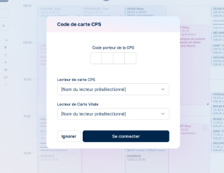

Accès à la plateforme
L’écran de connexion constitue le point d’entrée de la plateforme MIA Experts.

Cet écran permet à l’utilisateur de :
- Se connecter par l’adresse mail et le mot de passe.
Une fois les informations saisies et validées, l’utilisateur accède à la plateforme MIA Experts et à ses fonctionnalités selon les droits associés à son profil.
Il lui est possible de lancer une procédure de récupération du mot de passe en cas d’oubli.
- Se connecter via Pro Santé Connect, le service d’identification sécurisée des professionnels de santé.
Cette méthode permet à l’utilisateur de s’authentifier à l’aide de son identité professionnelle, sans avoir à saisir manuellement ses identifiants email et mot de passe.
- Contacter l'équipe MIA Experts pour une création de compte ou en cas de difficultés de connexion.
Une fois connecté la solution propose connecter la carte CPS :

Cette étape permet :
d’authentifier la carte CPS du professionnel,
d’activer l’accès aux téléservices de santé, tels que le DMP, l’INSI ou d’autres services nécessitant une authentification forte.
Dans cette fenêtre, l’utilisateur peut :
saisir le code porteur de la carte CPS,
sélectionner le lecteur de carte CPS,
sélectionner le lecteur de carte Vitale le cas échéant.
Cette étape est optionnelle.
L’utilisateur peut choisir de l’ignorer et accéder immédiatement à la plateforme.
Les fonctionnalités ne nécessitant pas l’usage de la carte CPS restent pleinement accessibles, tandis que les téléservices nécessitant une authentification CPS seront disponibles une fois cette étape validée.